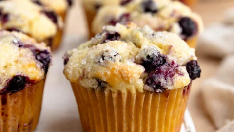

Ribeye Steak
Home

Description:
A blueberry muffin is a soft, moist, and tender baked good with a gently rounded top.
Studded with juicy, sweet, and tangy blueberries, each bite offers a delightful burst
of fruity flavor. Often baked with a golden, crackly crust or topped with a sweet,
crumbly streusel, these muffins offer a pleasing contrast of textures. They are a
classic breakfast and snack pastry, perfect on their own or served warm with a pat of butter.
- 1 ½ cups (195g) all-purpose flour
- 3/4 cup (150g) granulated sugar
- 1/4 teaspoon fine sea salt
- 1/3 cup (80ml) vegetable oil, safflower oil, or avocado oil
- 1 large egg
- 1/3 cup (80ml) milk or non-dairy milk
- 1 ½ teaspoons vanilla extract
- 6 to 8 ounces fresh or frozen blueberries
Steps:
- Preheat oven and prep pan: Preheat the oven to 400°F (204°C). Line muffin cups with paper liners (8 for big muffins, 10 for standard, or 22 for mini muffins). Lightly grease or spray the tops of the muffin tin with oil to prevent the oversized tops from sticking (high-quality nonstick pans may not require this).
- Prepare the dry ingredients: In a large bowl, whisk the flour, sugar, baking powder, and salt.
- Prepare the wet ingredients: Choose a measuring jug that holds at least 1 cup. Add the oil to the jug, and then crack in the egg. Pour in enough milk to reach the 1-cup line on the jug (this should be about 1/3 cup of milk). Add the vanilla extract and whisk until everything is combined.
- Make the batter: Add the wet ingredients to the bowl with the dry ingredients. Stir gently until the batter comes together. Gently fold in the blueberries. Be careful not to overmix! The batter will be thick (see tips below).
- Bake the muffins: Divide the batter between muffin cups. If making big-topped muffins, the batter will come to the tops of the paper liners. Sprinkle a little sugar on top of each muffin. Bake muffins for 15 to 20 minutes or until the tops are no longer wet and a toothpick inserted into the middle of a muffin comes out with crumbs, not wet batter. Transfer to a cooling rack.